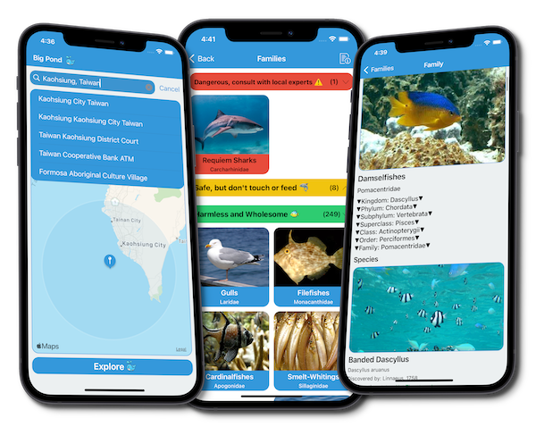

Independent projects. Real curiosity.Scroll to explore ↓
01 / Selected work
A few things I've built.
Apps, experiments, and problems I couldn't leave alone.
Big Pond / iOS

A little less unknown.
001 / Explore
Big Pond
Marine life discovery · iOS · Personal project
What's swimming around your favourite beach? I built an app to find out. Discover nearby marine life and get a better sense of what you might meet in the water.
The story & the technical bits
Moving from central Germany to Taiwan made me curious about the ocean. Also a little nervous. Big Pond grew out of trying to understand the animals beneath the surface, even outside popular diving spots.
I built it with MapKit, VIPER architecture and Grand Central Dispatch, with lazy loading and caching to keep the map and species lists responsive.
Multiplayer strategy · TypeScript · Personal project
A medieval strategy game in the browser. A persistent world, procedural maps, and the kind of multiplayer problems that make a side project interesting.
The story & the technical bits
This was an excuse to build as much as possible myself: hexagonal maps, A* pathfinding, settlements and real-time multiplayer.
Node.js, TypeScript, socket.io, MySQL, Firebase Authentication and PixiJS. A lot of learning happened between the first tile and the first working game.
I led the development of the Wilo Assistant relaunch: an iOS and Android tool for heating, plumbing and building-services professionals.
The work behind it
I coordinated developers, designers and stakeholders to deliver both apps in time for the target industry trade fair. The work included evaluating the architecture and balancing the scope against a fixed deadline.
I'm a generalist with a focus on web and mobile development. I enjoy following a problem through the whole stack, from the interface someone touches to the systems behind it.
My work spans frontend and backend development, mobile apps, automated testing and CI/CD. My side projects tend to start with a question and end with more questions. Usually some working software, too.